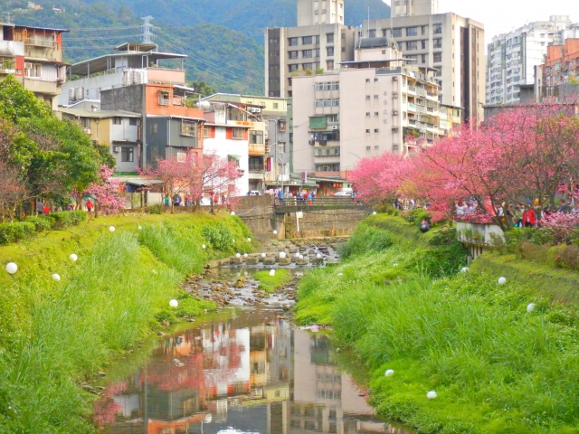
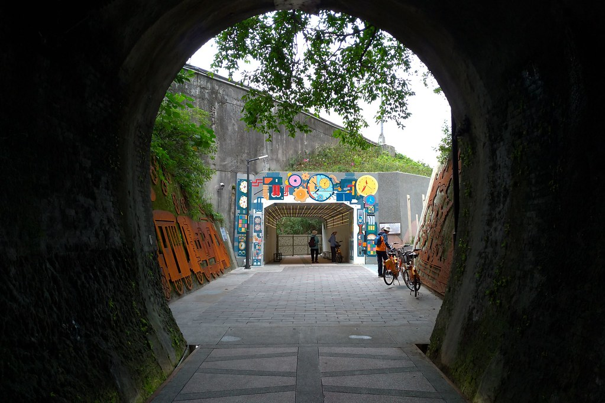

-

拱北殿是新北市的百年古剎，最早的廟宇建於1906年，採用神社鳥居形式的入山口，經過紅色的彼岸橋與日式石燈籠相遇，便可來到近期爆紅的雙拱橋，雙拱橋造型優美、古樸雅致，是許多人拍婚紗照的拍攝處，再佐以寒流一過的滿山頭的楓紅，不用飛去日本，就能感受秋季詩情畫意的極致表現。而拱北殿有多條步道可以健行，沿著石階向上，到川流亭可以登高往遠，將汐止市區與遠方的山巒美景一覽無遺。。
拱北殿
-
每到花季沿著河畔綻放桃紅色花海，自109年起市府利用溪澗地勢將球形燈飾滿布於溪底及邊坡，夜間亮起的「溪澗夜櫻」更是賞櫻嬌點中的焦點，河畔山櫻花在夜間繽紛燈光投射下，呈現出不同於白天的嬌媚姿態，美不勝收。文化里康誥坑溪兩岸種植約二百多株櫻花，在汐止區公所與文化里辦公處共同細心呵護下，花況更勝以往；康誥坑溪自104年起上游實施封溪護魚，全流域禁止使用任何方式採捕水產動植物，以確保溪流生態資源永續利用，民眾步行於櫻花步道下，除了欣賞熱鬧繽紛的桃紅春櫻，也能感受到康誥坑溪的豐富多樣生態。

康誥溪步道-觀賞櫻花
-
位於汐止長安橋下游800公尺處，也是第1座跨越基隆河的景觀橋，緊連五堵火車站，是專供行人和自行車使用，橋型採「單斜塔斜張橋」結構，75公尺的塔柱傾 斜設計，每隔2秒就會變換顏色， 主橋柱造型像一支聳立的巨型麥克風直指天際，白色的塔柱及橋身都裝設了點狀光源，夜裡呈現出璀璨亮眼的點點星光橋因此而得名。
星光橋
-

基隆河左岸又了新的自行車道開通，連接新北市汐止與基隆的百年隧道【五堵台鐵舊隧道】，保留了日治時期鐵道的風華，與位在福隆的舊草嶺隧道有著異曲同工之妙，走進隧道身處，有種置身神隱少女電影場景的感覺，一路從五堵火車站出發，沿著基隆河濱前進，沿途自行車道規畫完善，非常適合假日親子同騎!